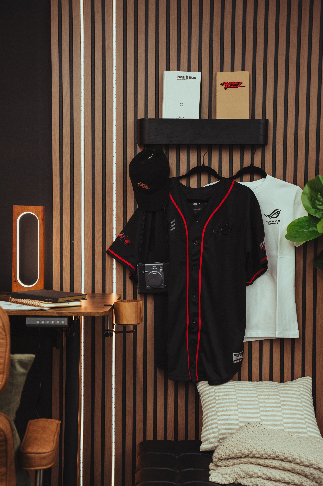
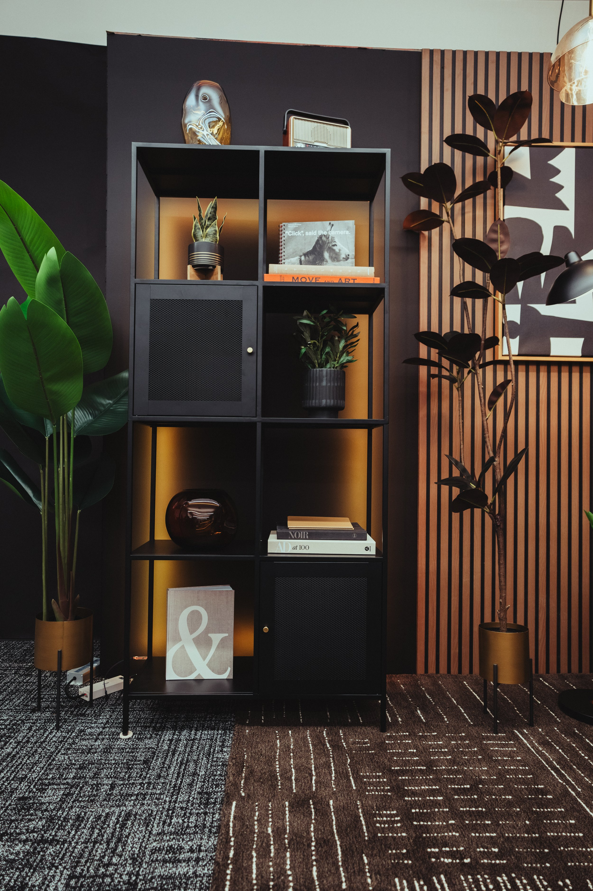
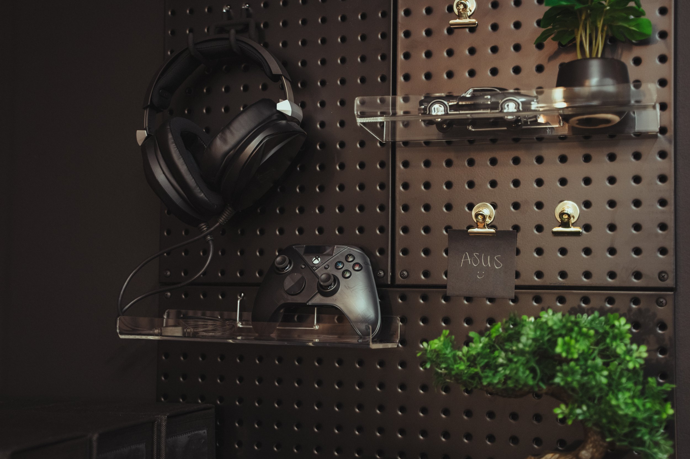

ASUS Studio
For ASUS, we transformed a standard office space into a fully customized studio tailored for creating premium video and photo assets. The challenge was to reimagine a functional workspace into a dynamic, brand-forward environment that could adapt to a variety of product showcases, particularly in the electronics and computer hardware space.
We restructured the space using modular design elements, RGB remote-controlled lighting systems, and interchangeable props—allowing for fast, seamless transitions between setups. We introduced rich wood paneling, glass accents, and a chic black finish throughout—blending warmth and modernity to reflect ASUS’s innovative yet premium identity. Custom-built features reflect ASUS’s cutting-edge aesthetic, while the lighting system enhances product presentation and provides full control over atmosphere and tone.
ClientASUS
Year2025RoleSet FabricationSet DesignProduction



